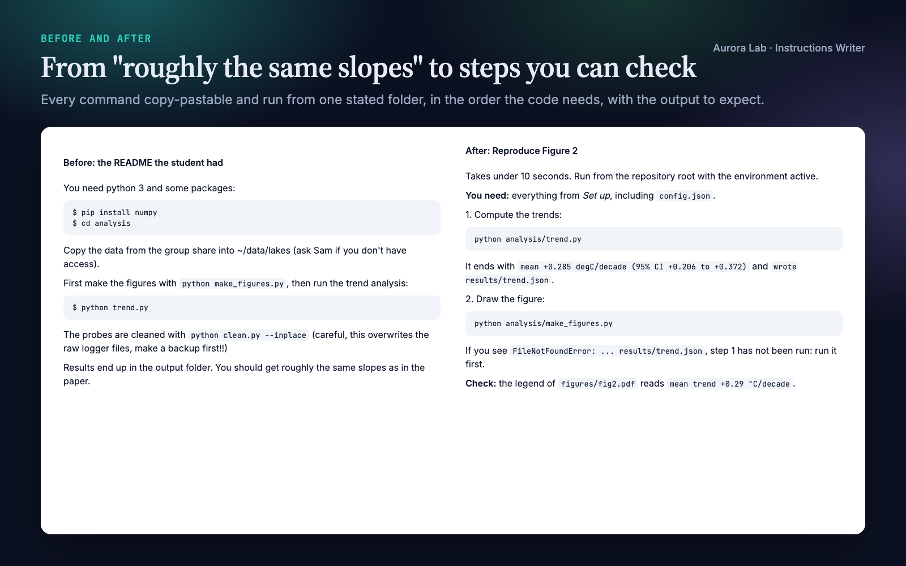
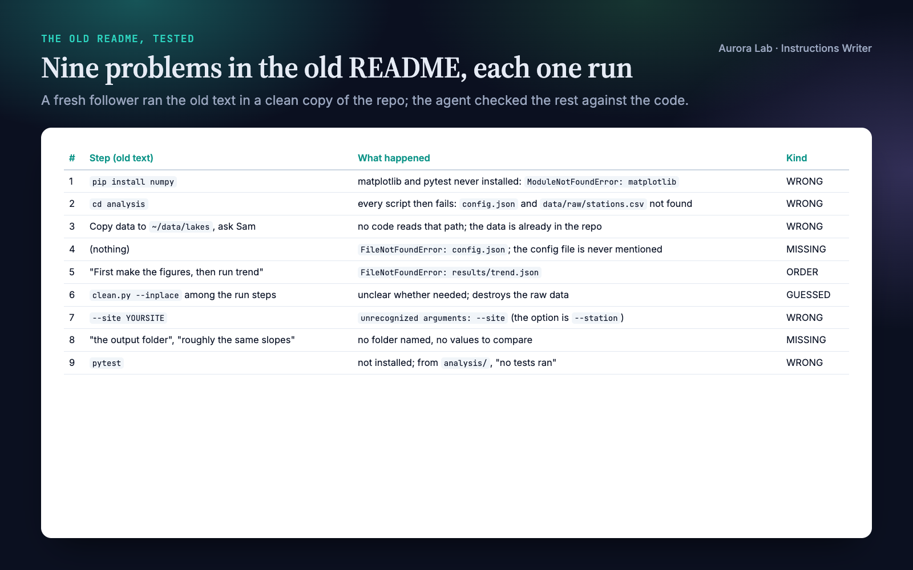
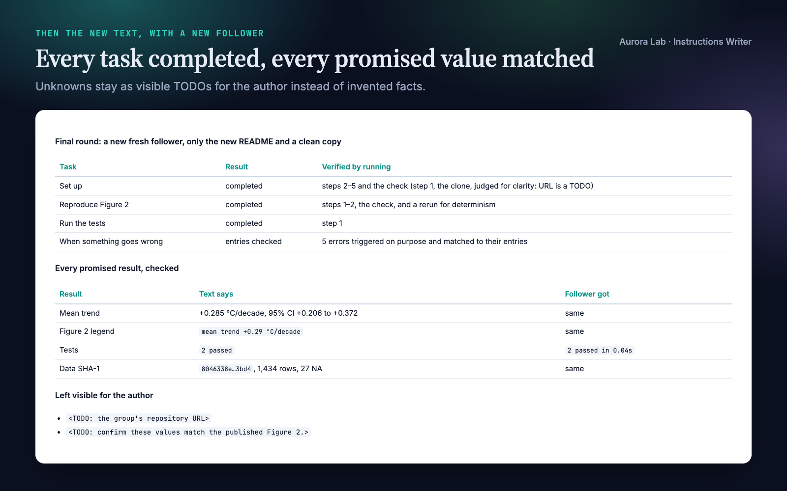
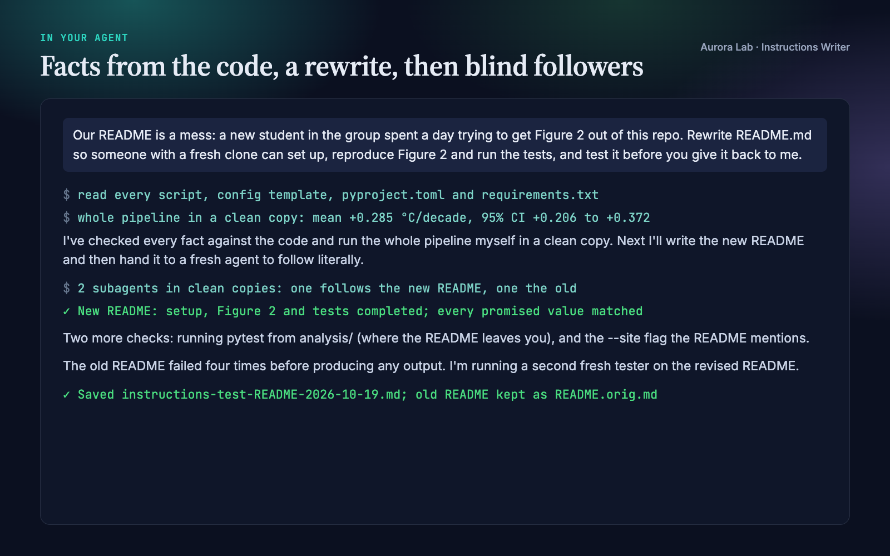

Overview
The author of a README can't test it. They fill every gap from memory, and the file a missing step would create already exists on their machine. So the new student spends a day on cd analysis, a config file nobody mentioned and a figure script that has to run second. Instructions Writer makes your agent treat instructions like code: written from the real project, each step checkable, then tested.
- Facts from the project, not from memory. Versions from
pyproject.tomlorenvironment.yml, dependencies from the imports actually used, options from the scripts' argument parsers, run order from which script writes which file, data location from the config. Contradictions with the old text are listed. Anything the project can't answer stays a visible<TODO>, never an invented value. - Steps you can check. Each task gives its time, the folder to run from and what you need, then numbered, copy-pastable commands (one per block), the output to expect after each, the likely error next to the step that causes it, and a final check such as a value with its tolerance.
- A "Reproducing the results" table for research code: each figure, table or headline number with its command, output file, expected value and run time.
- Tested by a fresh follower. A subagent that sees only the text and a clean copy of the project (no environment, no outputs, no filled-in config) runs every step it safely can and records each error and guess. The agent fixes the text and retests with a new follower, up to three rounds.
- A test report: what the old text broke, the contradictions found, what was verified by running and what was judged for clarity only, open issues, and code changes it recommends but doesn't make.
Pairs well with: Research Software, which makes the code itself correct and reproducible, and Citable Python Packages (free). Neither is needed.
Quick start
- Get the skill from Agensi and add it to your agent (Claude Code, Codex CLI, Cursor, Gemini CLI or any agent that loads SKILL.md skills).
- Nothing to install. There are no scripts. The agent needs a terminal to run the instructions it tests.
- Ask in plain words, saying who will follow the instructions and what they should be able to do at the end.
Example requests:
- "A new student couldn't get Figure 2 out of this repo. Rewrite README.md so a fresh clone gets there, and test it."
- "Write a 'Reproducing the results' section for this repository: every figure and table, the command, the expected value and the run time."
- "Review our staining protocol in protocols/staining.md. Could a new technician follow it alone?"
- "Test the install instructions in docs/install.md on a clean copy and fix whatever breaks."
Want to see a full run first? The skill ships the demo's before README, after README and test report in examples/.
What you get
Everything below comes from one real run: a fresh agent session with only this skill installed, given the request shown in the last image ($1.59, about five minutes). The repository was ours: lake-trends, a small synthetic analysis of six made-up lake temperature stations (a trend script, a figure script, a cleaning script and two tests), with a README written the way real ones are. We planted twelve problems: "python 3" where the code needs 3.10, a global pip install missing two packages, cd analysis when the scripts must run from the root, an unmentioned config file, data sent to a group share although it ships in the repo, the figure script before the script it depends on, a destructive cleaning step with its warning afterwards, no output folder or expected values, an option that doesn't exist, mixed names for the same thing, pytest never installed, and $ prompts in copy-paste blocks.
The new README fixed all twelve. Three fresh followers ran: one on the old README (it failed four times before producing any output), one on the new README (setup, Figure 2 and the tests on the first try, every promised value matched) and one on the revised README after small fixes. The agent also caught two things we hadn't planned: pip install -e . fails on this project, and the figure script hard-codes the last year. We checked every value it quotes (the trend, its interval, the row count, the checksum) against the data.




How it works
- Reader, start and finish lines. Who follows the text, on what platform, starting from what (usually a fresh clone), and the observable outcomes they come for ("Figure 2 is regenerated", "the tests pass"). Inferred and listed in the report when you don't say.
- Facts from the project. Versions, dependencies, entry points and options, run order, data, configuration, outputs and expected values, each checked against its source file. Contradictions with the old text are kept for the report.
- Layout. What it is, before you start, a quick start of five steps or fewer, one section per task, reference, troubleshooting, version. Research code gets a "Reproducing the results" table; protocols get purpose, safety, materials, preparation, procedure, expected results and troubleshooting.
- Steps as checkpoints. Each task: an outcome heading, its time and working folder, what you need, numbered actions, the result to expect after each, the likely failure next to its step, and a final check.
- Writing rules. Conditions and warnings before the action, one action per step, copy-pastable commands, marked placeholders, isolated environments, one name per thing, research rules for data, seeds, tolerances and run time.
- Fresh follower. A clean copy of the project in the system temp directory; the follower gets only the text and that folder. The old text gets its own follower too, for the before/after.
- Fix and retest. Every guess and blocker is fixed in the text; blockers outside its control move to "Before you start". A new follower retests, up to three rounds.
- Deliver. The document (the old one kept as
<name>.orig.mdwhen there is no version control), the test report, and a summary in the chat.
Run-throughs and walk-throughs
Instructions with commands get a run-through: the follower executes what is safe and compares each result with the text. Protocols and anything that can't be executed get a walk-through: the follower reads as a careful new lab member and flags missing quantities and units, unsettled choices, late warnings and safe pause points. Without subagents or a fresh session, the agent follows the text itself in a separate pass and says so in the report.
What the follower may run
| Runs | Doesn't run (judged for clarity only) |
|---|---|
| Creating environments and installing packages inside the clean copy | Anything outside the clean copy |
| Your scripts on the shipped or a small input | Anything needing credentials or money |
| Tests, checks, short pipelines | Cluster jobs, downloads over about 1 GB, runs over about ten minutes |
Files it reads and writes
| File | Read or written |
|---|---|
| The instructions you point to | Read, then rewritten where you say. Without version control the old one is kept as <name>.orig.md. |
| Project files with the facts | Read: dependency files, scripts and their options, configuration templates. Never credentials or .env files. |
research/reviews/instructions-test-<doc>-<date>.md |
Written: the test report. Without a research/ folder it goes next to the document. |
| A clean copy in the system temp directory | Created for each follower and deleted at the end. |
It never changes your code or data unless you ask.
The test report
| Section | What it holds |
|---|---|
| Header | Date, version, run-through or walk-through, follower mode, rounds, platform, assumptions. |
| Verdict | Could a newcomer reach each finish line with the old text, and can they now. |
| Before | Each step of the old text the follower hit: what happened, its kind (blocked, guessed, wrong, missing, order) and the fix. |
| Contradictions | Facts the old text stated that the project contradicts, with where they were checked. |
| After | Each task's result in the final round, what was verified by running and what only by reading; each promised result against what the follower got. |
| Open issues | TODOs for the author, untested steps and why. |
| Recommended code changes | Changes that would make the instructions shorter or safer, not made. |
FAQ
Which agents does it work with?
Any agent that loads SKILL.md skills, including Claude Code, Codex CLI, Cursor and Gemini CLI. It needs a terminal, and works best where the agent can run subagents or start a fresh session.
Does it run my code? Is that safe?
It runs your instructions, as written, in a temporary copy of the project and deletes the copy at the end. Packages go only into an environment inside that copy. Anything needing credentials, money, a cluster, a large download or more than about ten minutes is not run, and the report marks it.
Will it change my code or data?
No. When the code is the problem, it documents the workaround and lists the fix as a recommendation. It changes code only if you ask.
What if my pipeline takes hours or needs a GPU?
Long and GPU steps are not run. Their run time and hardware are written down, plus a quick variant when your project has one, and the follower runs that instead.
Can it handle lab protocols?
Yes, as a walk-through: nothing is executed. It finds gaps in the text, not errors in the science.
Does it work with R, Julia or other languages?
Yes. It takes versions and dependencies from whatever the project uses, and the follower runs whatever the instructions say. Our demo was a Python repository.
How long does it take?
In our demo, about five minutes for reading the project, the rewrite and three follower runs. Each follower is a separate agent run, so testing uses several times the tokens of a plain rewrite.
Limitations
- A follower is a simulated newcomer: it knows more and gives up later than a real one. For high-stakes instructions a real newcomer is still the final test.
- Tests run on the agent's own machine, so other operating systems and versions are untested; the report states the platform.
- Steps that need credentials, money, a cluster, large downloads or more than about ten minutes are judged for clarity only.
- Without subagents or a fresh session the test is less strict; the report says so.
- Facts the project can't answer (a repository URL, published values, a licence) stay as TODOs for you.
- Protocols are walked through, not performed.
- It recommends code fixes but doesn't make them unless you ask.
Changelog
1.0.0 · October 2026 · First release.